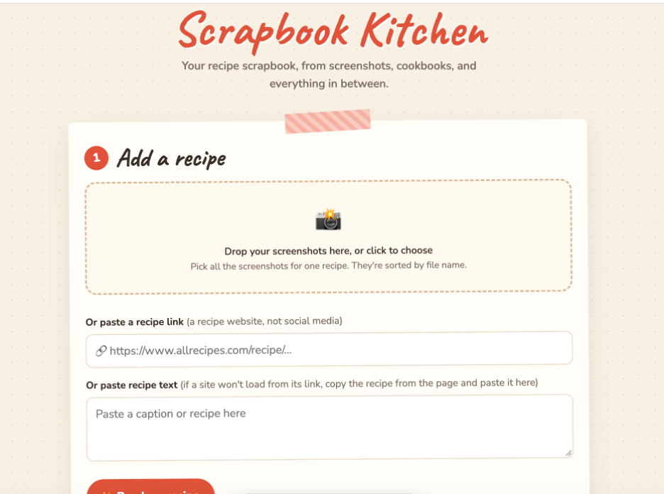
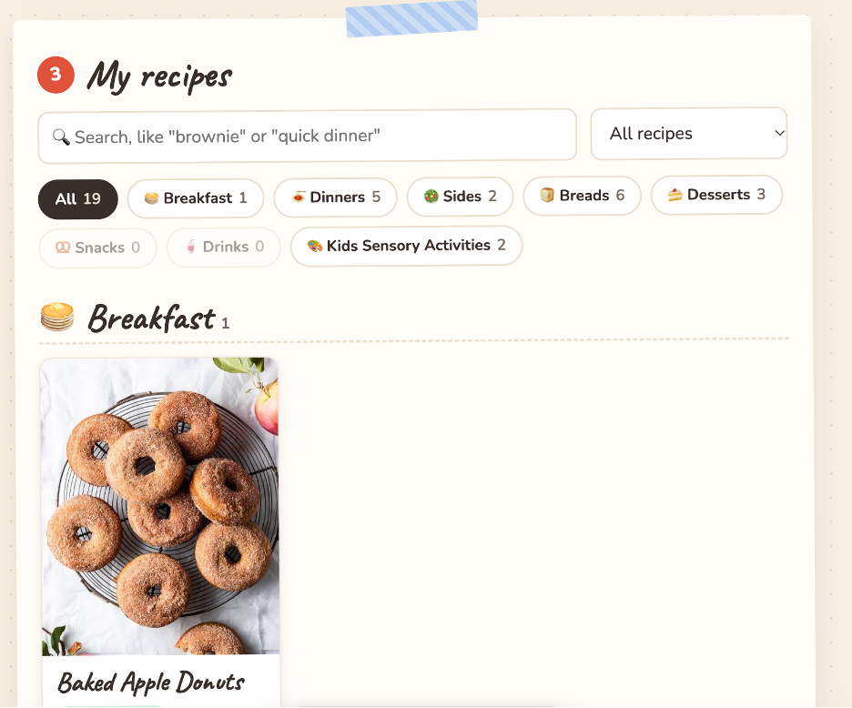
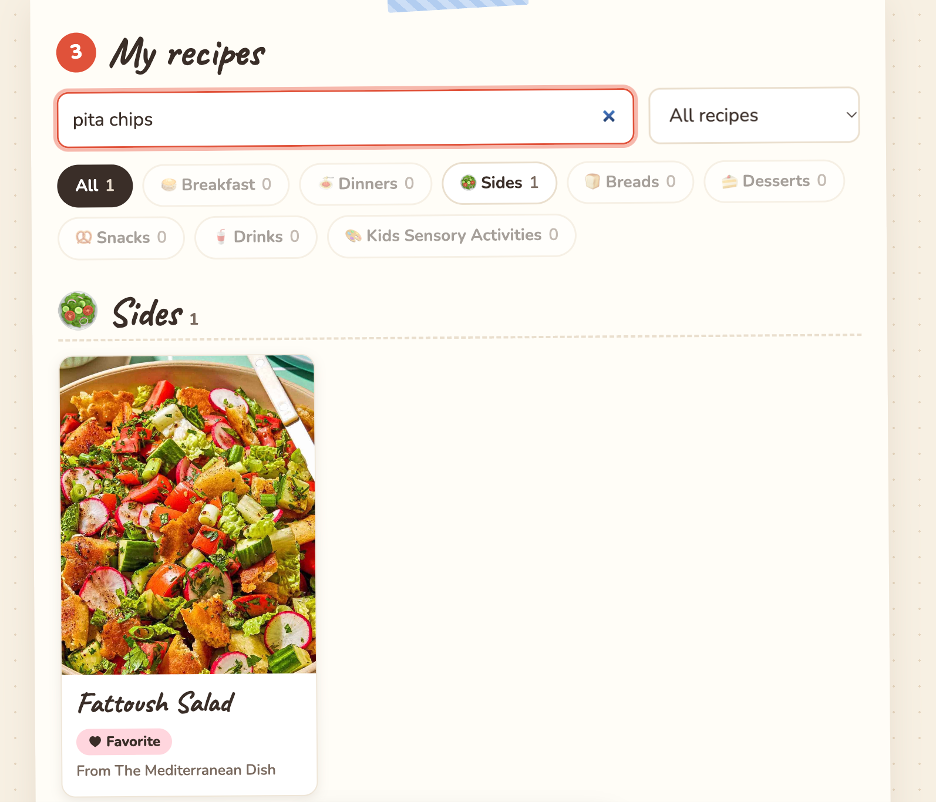
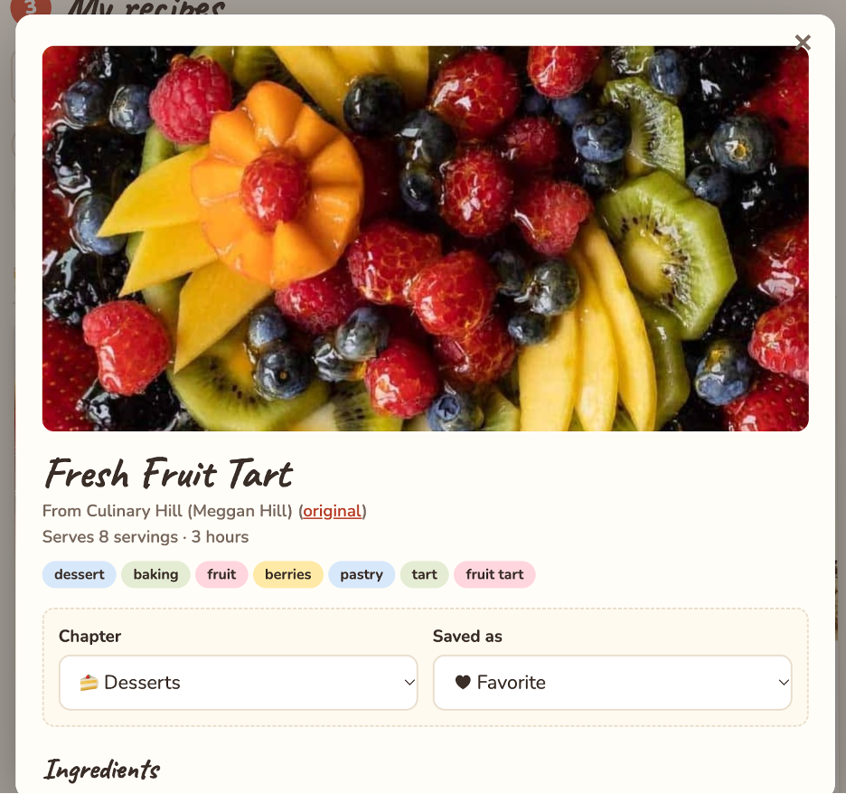
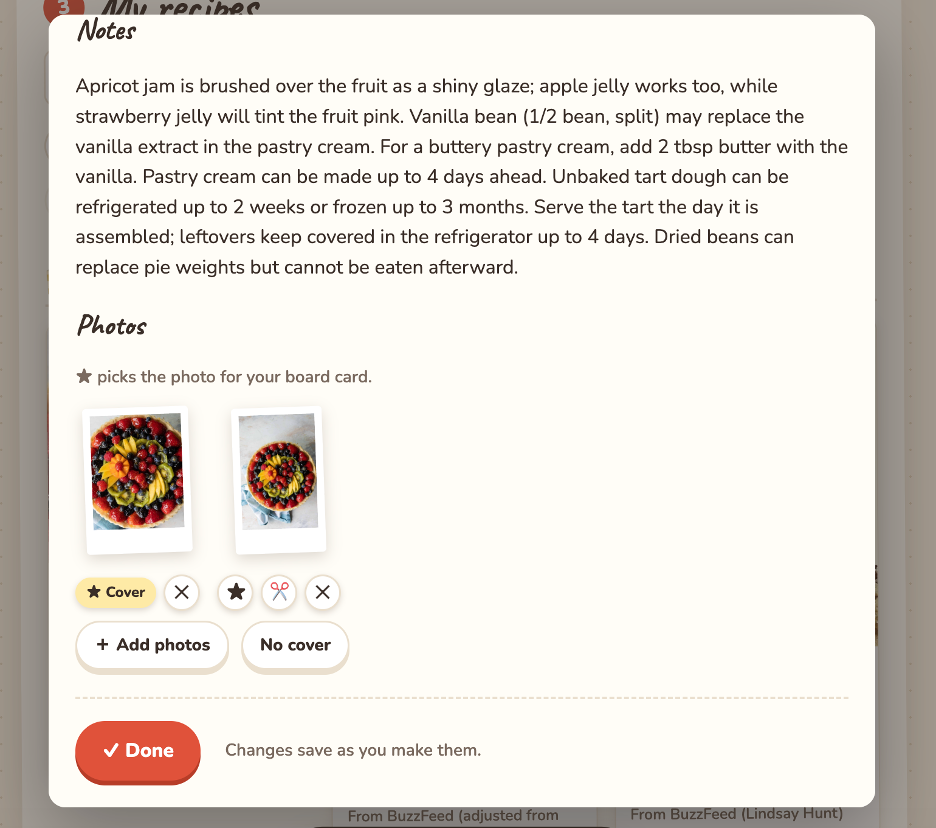

Your recipe scrapbook, from screenshots, cookbooks, and everything in between.
Current Status: Build 2: smallest working version (runs on my laptop, with real AI calls)
Demo: Screenshots of the Build 2 app running on my laptop. The live cloud app link comes in Build 5.





Who is this for? Me first, plus a family member and my class pod. More broadly, it's for home cooks and bakers who get inspired by recipes and videos they find online or in books, and want to be able to find them again. I'll use it myself every week and recruit testers directly.
The painful "Before" workflow: I save several recipes a week, mostly by saving videos on social media, but I often never go back to them. The recipes I love and use again and again, I email to myself as links. About once a week I try to find something I saved. I often forget I saved it, can't find the video again, or remember seeing something amazing but can't remember what it was.
The "After" workflow with this product: When I find a recipe, I upload one or more screenshots or photos (of a social media post, a recipe website, a cookbook page, or a handwritten family recipe), or paste a recipe website link or recipe text. AI turns it into a clean recipe with a title, ingredients, steps, and where it came from. I review and fix the result, then save it as "want to try" or "favorite" with a link back to the original image or post. Later, I search my saved recipes by keyword ("brownie", "chicken", "stuffing") or by description ("quick dinner", "chocolate desserts"), pull one up, and cook from it.
Riskiest Assumption: The AI misreads or invents part of a recipe from a messy source (handwriting, 3–5 overlapping screenshots, or an ad-filled web page), and I don't catch it before I cook. A wrong amount of flour or a missing step ruins the dish and my trust in the app.
How this build tests it: I run the full workflow on my own real, messy recipes: a handwritten family card, a social media caption split across screenshots, ad-heavy recipe websites, and pasted text from sites that block apps. The AI is told to copy exactly and never guess silently. Anything it's unsure of goes on a "Double-check these" list, and every recipe goes through a review step where I fix it before saving. In Build 1, it got every ingredient and step right on the three recipes I checked line by line. Build 4 will measure this more formally.
Simple Architecture: [Screenshots, a link, or pasted text in my browser] → [My local Node.js server] → [OpenRouter → Claude Haiku 5.5] → [A structured recipe I review, then save]
public/index.html, plain HTML and JavaScript): shrinks screenshots before upload, shows the draft recipe for review, and shows saved recipes as a cookbook board with chapters, cover photos, and search.server.js, Node.js with no installed packages): for a link, it downloads the page and uses the recipe data the website includes for search engines, or the page's text. It sends the screenshots or text to the AI with instructions and a fixed recipe format, then saves what I approve..env file and never goes to GitHub.data/recipes.json, and photos and screenshots in data/images/, on my laptop only..env file so they're never pushed publicly to GitHub. It surprised me how easy it was to use a coding agent to build this, and that it told me exactly what still needed to be done.AGENTS.md.